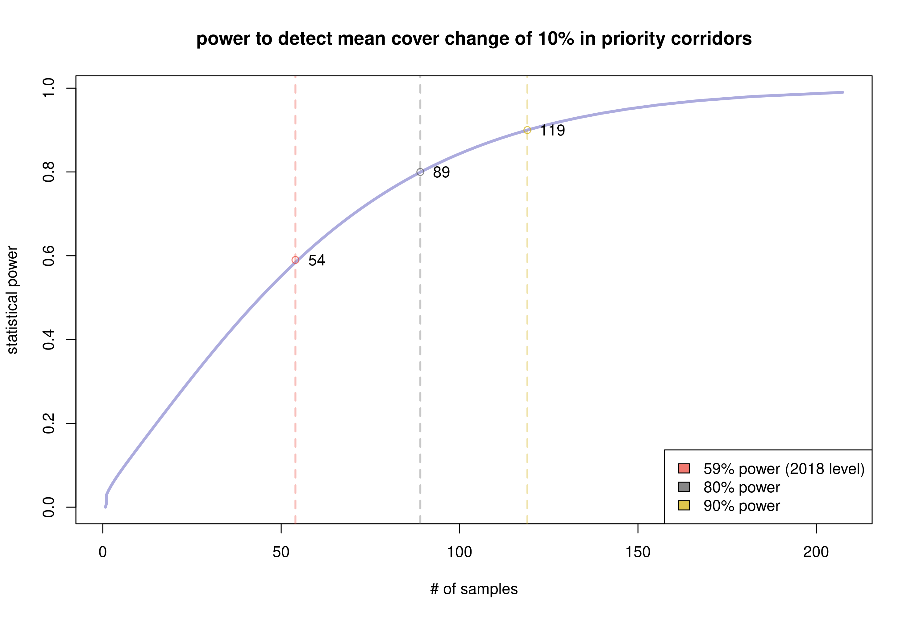
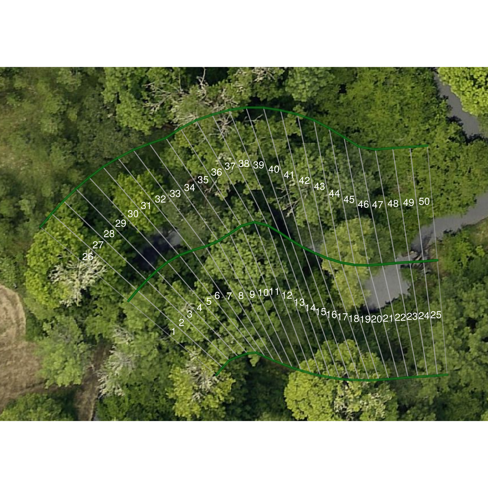
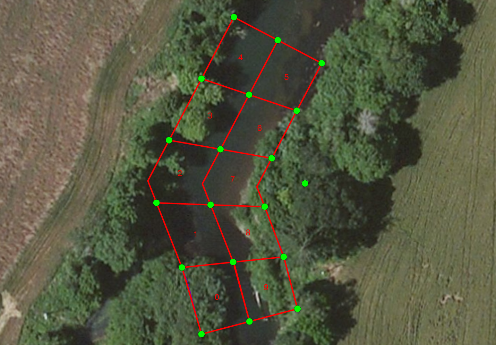
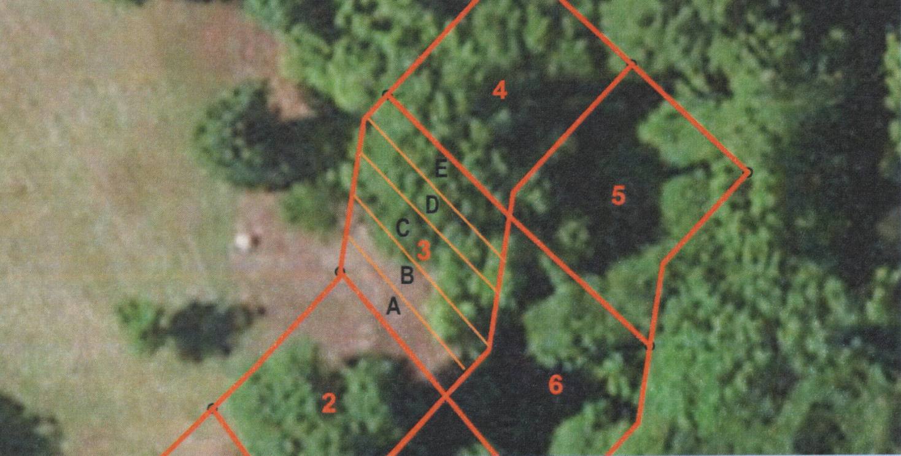
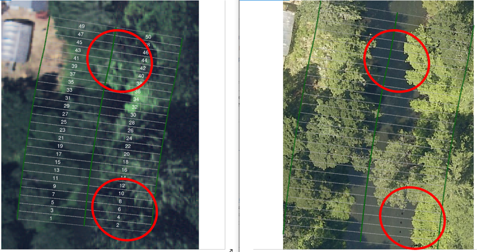
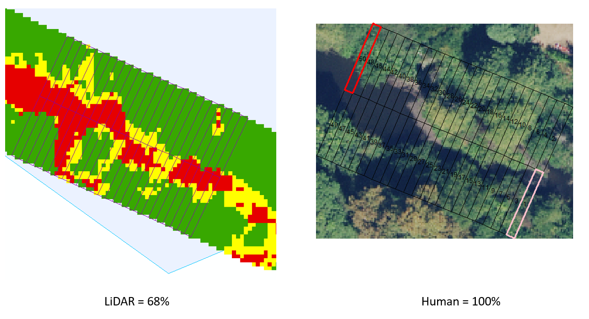

Introduction
The Benton County Non-Regulatory Riparian Corridor Program is a voluntary effort from the County to meet stream temperature total maximum daily load (TMDL) requirements within the Willamette River Basin through a non-regulatory compliance process. Through this program the County develops and implements education, outreach, collaboration, monitoring, and adaptive management to support private rural property owners in protection and enhancement of native riparian vegetation.
In conjunction with DEQ Water Quality Division staff, over a period of 2011 to 2013 the County developed a riparian vegetation sampling methodology to detect and respond to riparian cover loss. The County monitors land along “priority riparian corridors”, which refers to perennial or fish-bearing streams in the Rural Residential zone that the County directly oversees and monitors.
This document records the methodology staff use to monitor the extent of canopy cover in priority riparian corridors, and determine whether canopy cover has increased or decreased over the monitoring period. We discuss drawbacks and pitfalls associated with each method, and our reasoning behind each selection.
Main Research Questions
Monitoring reports indicate whether canopy cover extent in priority riparian corridors has increased or decreased over the monitoring period. If the County identifies reductions to cover within priority riparian corridors during annual reports or the 5-Year Trends and Status Report, then DEQ may determine that it is necessary for the County to adopt a regulatory riparian protection program, based upon the level of reduction. The draft regulatory Stream and Riparian Corridor Overlay Zone ordinance proposes to allow “up to 10% or 2,000 square feet, whichever is less,” of vegetation removal per property within the priority corridor. Staff determined that standards for cover loss in the voluntary program should be as stringent as the regulatory alternative, and that a decrease of 10% or more in cover within priority corridors would place the County out of compliance.
Determining whether cover loss has occurred involves answering four key questions:
- What was the cover extent in year 1?
- What was the cover extent in year 2?
- Did the amount of cover change from year 1 to year 2?
- How confident are we the change in cover did (or did not) occur?
- Do active county permits impact cover change?
Therefore, for the purposes of statistical analysis, staff selected a minimum sample size sufficient to ensure that if mean cover change was zero, the range of uncertainty around the estimate of the mean would be narrow enough to exclude the possibility of 10% or more cover loss with 95% confidence. Staff also use 10% loss on individual properties within the priority corridor as a threshold to trigger staff response to property owners.
Scope of Analysis
Where Cover Monitoring Occurs
The County has riparian oversight authority over land located within the Rural Residential zone that is not publicly owned, primarily in use for farm and forest activities, or within the urban growth boundary and city limits of the following incorporated cities: Corvallis, Albany, Philomath, Adair Village, and Monroe. The program defines “priority riparian corridors” as 50-foot buffers (75-foot for main-stem Willamette River1) along either side of:
- Perennial streams (as determined by Benton County from USGS and BLM data), or
- ‘Fish Bearing’ streams with ‘verified’ and ‘assumed’ ‘fish presence’ map attributes (as determined by Oregon Department of Forestry).
When the County issues new building permits or land use application approvals for structures or uses on property that includes priority riparian corridor, staff provide information to the property owner on riparian habitat best-management practices. Program staff document and track sites in the priority corridor where riparian vegetation removal impacts have occurred to determine if the removal relates to permitted development or is due to natural disturbance, hazard tree removal, or other non-native vegetation removal. In cases of documented vegetation removal, program staff inform the property owners that vegetation removal risks the continued non-regulatory nature of the program, and provide information on methods to restore or mitigate impacts from vegetation removal.
Determining Sample Size
The number of samples we collect determines the statistical power of our analysis. If we collect too few samples, our conclusion will lack certainty and we may learn nothing new at all. However, every additional sample increases the marginal cost of monitoring and the burden of the program on the taxpayer. Increasing the level of statistical certainty around a conclusion often involves diminishing returns of investment, where taking many additional samples ends up providing little new information.
Statistical power analysis is the practice of estimating the minimum number of samples required to detect an effect of a given size within a population. If we assume there is a difference of 10% between two populations, then the statistical power is akin to the chances that we would detect this difference by taking a sample of the given size from each group.
Using the monitoring data from 2016 & 2018, we can estimate the variance in mean cover extent over the priority corridors, and use this information to get a better estimate of the statistical power of the sample group. The average standard deviation \(\sigma\) in mean cover extent across permits and random sites was 0.237. If we want to detect a difference in means \(\Delta m\) of 0.1 (a 10% loss in cover), then the effect size d is:
\[ d = \frac{\Delta m}{\sigma} = \frac{0.1}{0.237} \approx 0.422 \]
This equations tells us how big an effect 10% cover loss is relative to overall variation in cover in the sample group. A larger number indicates the effect will be easier to spot with fewer samples, while a smaller number indicates the effect is more subtle and may require a large number of samples to detect.
Figure 1 shows the statistical power curve for detecting a 10% change in cover within priority corridors, based upon 2016 & 2018 monitoring data, using the power.t.test function in R version 3.6.3. The 2018 monitoring level shows a statistical power of 59%. A common rule of thumb is to use 80% as the threshold for the best return on investment in statistical certainty from a marginal increase in sampling number. Note that increasing the statistical power from 59% to 80% requires an additional 35 samples, an increase of 0.6% in power per extra sample, whereas increasing power from 80% to 90% requires an additional 39 samples, an increase of 0.2% in power per extra sample.

Figure 1. Statistical power curve for priority riparian corridors, based on 2018 data.
The ideal number of samples to collect is the minimum necessary to distinguish a change of 10% from a base case of no change with a certainty of 95% confidence. Figure 2 from the 2018 5-year trends report shows an example of zero net cover change in random sampling sites from 2009-2016. Note that the lower 95% confidence interval excludes 10% cover loss. In this case, 54 samples was adequate to distinguish zero net change from a cover loss of 10% with 95% confidence.

Figure 2. Mean cover change from 2009-2016, from the 2018 5-year trend report.
If the mean change was zero, but the lower confidence bar included 10% loss, then we would not be able to confidently distinguish between an actionable level of cover loss and no change at all. We would not be able to say more about cover change than someone who has not conducted a survey at all. Consider also the case where mean cover change is near-to but above the threshold; the closer to the mean gets to the threshold, the more likely the lower confidence interval will overlap it.
In this situation, to clarify whether a confidence interval excludes or includes the regulatory threshold, one of the only options available to the researcher is to increase sample size to raise statistical power. Use the curve in Figure 1 to estimate the potential increase in statistical power in response to an increase in sample size. Bear in mind statistical power is an estimate, not a guarantee of victory.
Assessing Cover Extent
Determining canopy cover extent is the most basic unit of analysis in riparian monitoring. Determining whether canopy loss occurs involves taking a difference in canopy cover extents between two years, so a discussion of how to assess cover extent in a single year must necessarily precede an explanation of how to assess loss over time. Determining loss between two years also requires assessing cover extent in each year prior to taking the difference.
Assess cover extent using the following steps:
- Draw random samples along the stream path of the study area.
- Construct a survey box around each sample point encompassing the riparian corridor.
- Score the extent of cover within each sampling box.
- Plot the results and produce summary statistics.
Random Sampling of the Priority Riparian Corridor
Priority riparian corridors are areas within 50 feet of a perennial or fish-bearing stream in the Rural Residential zone. Staff used the National Hydrology Dataset (NHD) to determine perennial and fish-bearing streams within the Rural Residential zone. However, staff did not elect to use the NHD stream lines to conduct the actual monitoring.
In the riparian zone, cover changes can encompass areas as minute as a few square meters. Stream lines from NHD can differ substantially from actual stream paths, and this error can significantly impact the accuracy of cover assessment. The accuracy of the stream line is a primary influence on the quality of the monitoring data. The highest quality of stream line data available to the county is a hydro-enforced drainage layer produced by Watershed Sciences, Inc. (WSI) in 2014. The main advantage of the WSI hydro-enforced layer over the NHD layer is improved stream path accuracy.
The hydro-enforced drainage layer does not differentiate between perennial, fish-bearing streams, drainage ditches or culverts. To sample within the priority corridor, staff draw random samples from along the stream path of perennial or fish-bearing streams in the Rural Residential zone using the NHD stream lines, then locate the nearest point on the WSI drainage layer to the selected point on the NHD layer. This process is automated through the sample_streams() function in the riparian package.
Sampling Areas With Active Permits
For annual monitoring, the study area includes tax lots where the County has recently approved permits or applications that may affect the riparian corridor. Among all permits issued during the study period, staff select the subset of permits where the maptaxlot number associated with the permit also has priority riparian corridor on the property. Staff randomly select points along the stream path within the subsample of taxlots containing priority corridor with active county permits, in the same manner as for the priority corridor as a whole, described above.
Survey Box Protocol
At each sampling point, we want to superimpose a box over the imagery of the landscape. This box will tell us what area is inside the corridor, but we will also subdivide it into smaller boxes or “slices”. These slices help us quantify a continuous phenomena like canopy cover into hard numbers that we can crunch on a spreadsheet. For each sampling point, we are interested in the corridor along a portion of the stream 75 feet in either direction. The surveying box extends a total of 150 feet along the stream path, and 50 feet perpendicular in either direction from the stream, encompassing the riparian corridor, approximately 15,000 square feet in area.
If we stopped every six feet along the 150-ft stream path and cut off a portion of our sampling box, like slicing a loaf of bread, we would end up with 25 segments along each bank of the stream, for 50 total. We will assume that each slice is the same size (approximately 300 square feet), although we know this is not strictly true for streams that turn and meander. Canopy cover can only be as full as 100%, so if each slice had full canopy it would account for 2% of total cover. The goal here is to use the score values of the smaller slices inside the survey box to derive the total percent cover for the sample.

Figure 3. Example survey box showing ID numbers assigned to each “slice”, or portion of the surveying box.
Figure 3 shows an example of a survey box superimposed over 2020 orthography. The numbers on each slice correspond to a column in a spreadsheet where staff track cover score observations. Note that the area encompassed by each slice changes in response to meander in the stream course. We can generally ignore this difference in area because:
- Changes in direction are random (a stream is equally likely to bend one way as another).
- Slice area changes are equally distributed (slices on one side get squeezed and the other side expands).
- The size of change is relatively small compared to instances of documented canopy loss (changes are unlikely to influence the detection of tree removal).
- Changes in stream direction are independent of the presence or absence of canopy cover.
Technically, the presence of trees can and does impact the capacity of the stream to meander in response to stormflow, but this does not change the fact that a stream course may change direction unpredictably even in hardened urban environments. Generally speaking, changes in slice size are equally likely to make the cover score go up or down. The more samples we take, the more likely the sum of these differences will cancel each other out, and so these differences can safely be ignored.
Initiation/Endpoint Selection Bias
Each stream line in the dataset has a beginning and endpoint that may intersect with another stream line. In the process of clipping the streams to include only those portions within priority riparian corridors, we create additional beginning and endpoints without adjacent stream junctions. When we randomly select points along the stream to sample, if the line path does not continue for 75 feet in either direction, either along the stream segment or continuing along an intersecting stream, then we redraw a new sampling point.
One can justifiably argue that portions of the corridor near an endpoint or initiation point are less likely to be selected and scored using this method, introducing a selection bias. This is because one can only observe an endpoint by selecting the position exactly 75 feet from the end of the segment, whereas one can observe most normal points by selecting any position within 75 feet of the point.
However, this issue is easier to identify than to correct. If we adjust sampling points that occur near an endpoint to include the full 150-foot segment leading up to the endpoint, then we are now more likely to observe an endpoint than a normal portion of the stream, and no better off. The danger in not sampling beginning and endpoints fairly is that our sample will not be representative of the priority corridor as a whole. Currently, we ignore this potential source of sampling bias on the presumption that the impact on how well the sample represents the priority corridor is small.
Correction for Aspect Changes
We score riparian cover extent by visually examining aerial imagery collected from a survey plane. A change in angle position of the survey plane relative to the riparian corridor can cause the taller portions of trees to appear inside a sampling box in one year and outside another. Fitting aerial imagery to a coordinate projection system can produce warping distortion. Even a minor GPS offset of less than a meter in the imagery can cause a cover extent score to change if the slice was on the cusp of either score and the difference shifts the balance in favor of a score change.
Scoring records changes in cover extent of 1% of larger. This resolution is of sufficiently high granularity to detect removal of individual trees from the priority riparian corridor. The granularity is also of high enough resolution that minor discrepancies in capture angle and GPS positioning can affect the cover extent score, causing a false appearance of change where none has occurred.
Score changes due to aspect change were relatively rare in the 2018 sample set and the magnitude of the effect on the mean was generally less than 5%. Aspect change errors in the sample were not biased upward or downward, and the net impact of aspect change on the estimate of the mean likely tends towards zero. Therefore, aspect changes can safely be ignored except in those cases where it appears as cover loss.
If the change in score due to aspect change results in a false positive in the search process for tree removal, then staff will ascertain whether the scores are entered correctly and are not the result of a data entry error. Staff will then note the occurrence of aspect change error and remove the false positive from the list of potential tree removals.
Centerline vs. Top-of-Bank
The best information we have on the physical location of streams in Benton County is the WSI hydro-enforced drainage layer, which represents the centerlines of streams as a series of lines in GIS. Consequently, survey boxes intended to encompass the riparian corridor extent 50 feet from the centerline of the stream. Technically, this is inaccurate because the riparian corridor extends 50 feet from the top-of-bank of the stream and not the centerline.
In common parlance, the top-of-bank is the bank edge. When a stream overtops the bank edge, it is flooding. For smaller streams, the bank edge is relatively close to the centerline because the stream is narrow, and the error associated with this method is small. However, perennial and fish-bearing streams are among the wider streams in the watershed, and their width can result in the failure to capture significant portions of the riparian corridor during sampling.
Figure 4 shows an example from 2013 where portions the stream are more than 100 feet wide. Drawn from the centerline of the stream, portions of the survey box (1, 4 & 5) completely overhang water, and fail to capture the adjacent riparian corridor entirely. If the survey box were drawn starting from the top-of-bank, and not the centerline, the measure would be more accurate and useful for analysis.

Figure 4. This survey box from 2013 captures more stream than riparian corridor.
Prior to 2018, staff constructed surveying boxes manually in ArcGIS. In addition to being labor intensive, this process led to inconsistent interpretations of how to draw the surveying box in response to stream meander and course change. Improving the consistency and speed of sampling was the primary motivation behind developing the riparian package for R in 2018. Automating this process allows us to produce a large number of surveying boxes relatively quickly, but they inherit the same problem of being based on the centerline and not the top-of-bank. Large stream widths crowded out significant portions of the riparian zone in roughly 15% of samples taken in priority corridors.
Figure 5 shows an example survey box generated by the riparian package superimposed over imagery from 2020. Note that the stream is about 40 feet wide along this portion, and roughly one third of each slice overhangs the water. In cases where the survey box covers stream and not the riparian corridor, we do not score flowing water or stream bed as bare ground. During the summer, when the bulk of aerial surveys take place, streams are at their low flow for the year, and may expose gravel bars that are fully immersed during winter under higher flows. We would not expect cover to be growing in temporarily exposed bars, and generally it is a mistake to treat the area of the stream between the banks the same as the riparian corridor adjacent to the banks.

Figure 5. Example survey box showing a significant portion of the box area overhanging stream and not riparian corridor. Imagery from 2020.
If we disregard the portion of the surveying box covering water or exposed bed, and consider the remaining portion representative of the riparian corridor as a whole, then we can proceed to score cover extent as if the remaining portion of the box were full size. Figure 4 illustrates why this is a problematic assumption. The corridor beyond slices 45-50 matches cover type, but the corridor beyond slices 26-44 does not. In this sample, cover is more likely to decrease the farther we get from the stream, and this is true generally, which is why portions of the corridor close to the stream are not well representative of portions further from the stream.
Why not measure the surveying box from the top-of-bank instead of the centerline?
On a nuts and bolts level, we do not know where the top-of-bank is, meaning we do not have a digital representation. Stream centerlines use digital elevations maps and drainage algorithms to infer stream presence. Based upon the available data, can we measure or approximate the location of the top-of-bank?
In Figures 4 & 5 we did a back-of-the-envelope calculation of where the top-of-bank is when we assessed how much of the surveying box overlay water or gravel bar compared to riparian corridor. If we recorded the distance from centerline to top-of-bank for each slice, we could build surveying boxes that correct for stream width. Consider that currently the researcher records a single cover observation score per slice. Adding an additional term to assess (stream width) effectively doubles the collection labor involved per sample to correct an error that affects only 15% of samples. Note that, with development time, we could use LiDAR to measure the top-of-bank in an automated fashion, but the human-assessed bank position is liable to be more accurate, because the majority of LiDAR data is over a decade old, and the top-of-bank has a tendency to migrate over time.
If we were to approximate the top-of-bank position, we could apply a single correction to each sampling box. In a case like Figure 5, we could assess the average stream width as 40 feet and move all slices 20 feet in a perpendicular direction to the stream, and this would work reasonable well when the centerline is well positioned. This would reduce collection labor to one additional observation per surveying box, and some additional effort constructing the surveying boxes. We could even arrive at an average stream width based upon drainage area, and apply this average without any additional collection effort. But each of these compromises increases the possibility that the surveying box will move too far from the center of stream and include area outside the riparian corridor.
Priority riparian corridor often abuts private property, and our monitoring mandate does not extend to private property beyond the riparian corridor. Owners may consider inquiries about tree removal outside of the priority riparian corridor as an invasion of privacy, so the county incurs some reputational risk by adopting a method that could accidentally extend beyond the corridor. Based upon standing water or exposed gravel bed, staff can delineate the top-of-bank in aerial imagery more easily than discriminating where the 50-ft buffer ends in a slice that has extended beyond the riparian corridor.
The methods we have examined for top-of-bank correction risk introducing as much error as they correct. Currently, staff discount the portion of the surveying box that lies over the stream bed, and score the remaining portion of the corridor within the box as if it represented the whole corridor.
Culverts
Even when restricting our analysis to perennial and fish-bearing streams, there are portions of the corridor where the stream passes underground through a culvert, typically when intersecting roads. In 2018, roughly 11% of samples in priority corridors included culvert passage through a portion or the entirety of the sampling box. In 2020, one of the largest increases in canopy cover occurred in young trees planted on a traffic median, where the stream is passing through a culvert.
Clearly, trees cannot provide shade to a stream that is passing through a tube underground, so the metric of cover extent does not apply to culverts. Given that we are interested in the impact of canopy shade on stream temperature, it is reasonable to restrict our analysis to portions of the corridor that do not run through culverts. However, the proportion of total stream length channeled through culverts is still relevant information about the stream system, with potential impacts on temperature.
Going forward, the recommended method to report on culverts in the priority corridor is to:
- Remove survey boxes with culverts from annual and permit sampling pools.
- Report the total stream length channelized through culverts within priority corridors.
- Report any net increase or decrease in stream length channelized through culverts within priority corridors in the 5-Year Trends and Summary Report.
Junctions
The survey box extends 75-ft in either direction along the stream path from the selected point on the stream. If the stream path encounters a junction, the survey box follows the larger-order stream, or main stem. On a practical level, it is difficult to ascertain relative stream order or even direction of flow by using a program to inspect the hydro-enforced drainage layer that we use represent the stream. In the riparian package, survey boxes follow the most oblique path angle at junction traversals (taking the straightest path and avoiding sharp turns). This results in adherence to the main stem in the majority of cases.
Scoring Cover Extent
Canopy cover extent refers to the percent area of the riparian zone with canopy cover present.
- Full Cover - Vegetative canopy heights exceeding 15 feet.
- Partial Cover - Vegetative canopy heights from 5-15 feet.
- No Cover - Vegetative canopy heights less than 5 feet.
To quantify the extent of vegetative cover, staff divide the sampling area into stream segments approximately 6 feet in stream length and extending 50 feet into the left or right bank riparian corridor, resulting in a unit of observation of ~300 square feet and 50 units per sampling point. Each unit receives a score of 2 for full cover, 1 for partial and 0 for no cover, with the total percent cover being the sum of cover in the sampling area divided by the maximum possible cover, which is the total number of units in the sampling area multiplied by 2. In other words:
- There are 50 slices per surveying box.
- Each slice can get 2 points maximum score, 100 total.
- Each change in cover score (from 0-1 or 1-2) is a 1% change in cover.
- The cover percentage \(c\) is the total score \(x\) divided by 100, \(c = \frac{x}{100}\).
This classification system stems from the 2013 methodology. At the time, staff manually constructed the survey box, subdividing it into 10 polygons as shown in Figure 4. Page 20 from the 2013 annual monitoring report notes:
The polygons are about 50ft by 50ft, on average; therefore the polygons are split into fifths longitudinally resulting in 50ft by 10ft areas. … The idea is to figure out how many “fifths” of the polygon are filled with vegetation and what type of vegetation.
Figure 6 shows an example figure from the 2013 report with a survey polygon subdivided into fifths labeled A-E. The labeling conventions have changes, but the automated survey boxes produced by the riparian package follow the same methodology, as evident in Figures 3 and 5.

Figure 6. Survey box from 2013 showing portion 3 subdivided into “slices” A-E.
Determining Mean Cover Extent
Estimating the mean cover extent in the priority corridor is a primary deliverable of the bi-annual monitoring report, and it characterizes the proportion of the riparian zone shaded by canopy cover. We use the mean percent cover of survey boxes in our stream samples to characterize the mean cover extent of the corridor. If \(N\) is the total number of samples, and \(c_i\) is the percent cover of sample \(i \in N\), then mean cover \(\bar c\) is:
\[ \bar c = \frac{\Sigma_{i=1}^{N}c_i}{N} \]
The upper and lower confidence intervals of the mean \((\bar c_{upr}, \bar c_{lwr})\) are:
\[ (\bar c_{upr}, \bar c_{lwr}) = \bar c \pm 1.96 \cdot \frac{s}{\sqrt{N}} \] where \(s\) is the standard deviation of \(\bar c\) and 1.96 is the critical value associated with a confidence level of 95%. To the extent that our stream samples are representative of the riparian corridor as a whole, we can be confident there is a 95% chance that the true mean in the corridor lies within the upper and lower confidence interval of our estimated mean.
Assessing Change in Cover
Staff revisit the same randomly-selected sampling points in each monitoring year, sometimes referred to as a longitudinal survey because we are following the same sampling points through time. The reason we visit the same sites every survey year is because we are interested in the rate of change in the corridor. If we selected different samples every year, it would be unclear if changes in cover from year to year were due to differences between the places we selected or actual changes in cover extent. By revisiting the same sites year after year, we can eliminate site-to-site variation and measure only changes in cover extent. We can even circle individual trees or limbs lost during an observation period!
Scoring Changes in Cover
The objective of monitoring cover extent is to reflect cover change over time in the assessment score. If a cover extent changes over the study period, it is important for the change to be reflected in the cover score. In Figure 7, a tree canopy disappeared from over the middle of a stream, revealing water underneath. It is difficult to tell from the angle of the imagery whether a tree canopy could or should be over the open water, and a reasonable researcher could assess the extent in 2020 as full cover over these portions of the bank, based upon the methodology for discriminating between the stream bed and riparian corridor via the top-of-bank. However, a score of full cover for these slices would not reflect the change in extent, so we amend the score to partial cover where loss has occurred. Likewise, a score from a previous year may need to increase to accommodate a loss observed in the present year, if that offers the clearest description of how extent has changed over the study period.
Note that the action threshold for the county, 10% cover loss, is a change in mean. It is less important that the cover extent accurately represents the mean in a given year, and more important that the measure of change between years is accurate. If knowing mean cover extent in a given year were more important than how it has changed, we would likely collect a new set of random samples in every survey year, and have less confidence in any degree of change. Our objective is to have an accurate assessment of change, and so it is preferable to adjust scores in either year to provide the most accurate reflection of change in extent. When adjusting scores from a prior year, issue a corrections table noting the context of each adjustment for inclusion in the appendix of the monitoring report.

Figure 7. Example of cover change from 2018 to 2020.
Determining Mean Cover Change
The estimate of mean cover change is a primary deliverable of our annual monitoring reports and 5-year trends and status reports, and the central metric by which the County judges compliance with the goals of the non-regulatory monitoring program. We use the mean percent change among survey boxes in the sample to characterize mean cover change throughout the priority corridor.
If \(x_{ij}\) is the cover score assigned to slice \(j\) of survey box \(i\), then \(\Delta x_{ij}\) refers the difference in cover score between two observations or survey years. The total change \(\Delta c_i\) for the survey box \(i\) is the sum of differences over slices, so that:
\[ \Delta c_i = \frac{\Sigma_{j=1}^{50} x_{ij}}{100} \] where there are 50 slices per survey box. The division by 100 converts the numerator from an integer score to a percent change because 100 points is the maximum score a survey box can receive for full cover.
The mean difference in cover extent \(\Delta \bar c\) is then:
\[ \Delta \bar c = \frac{\Sigma_{i=1}^N \Delta c_i}{N} \]
and the confidence intervals on the change in mean cover (\(\Delta \bar c_{upr}, \Delta \bar c_{lwr}\)) are:
\[ (\Delta \bar c_{upr}, \Delta \bar c_{lwr}) = \Delta \bar c \pm 1.96 \cdot \frac{s_\Delta}{\sqrt{N}} \] where \(s_\Delta\) is the standard deviation of the change in mean cover.
To the extent that our randomly-selected samples are representative of the priority corridor as a whole, we can be confident there is a 95% chance that the true mean level of change lies within the upper and lower confidence level of our estimate. Since a loss of 10% or more in cover would place the County out-of-compliance, the confidence interval needs to exclude this lower range to consider the County in compliance.
Comparing Sites with Active Permits to Randomly Selected Sites
The County is interested in whether active permits impact cover change within priority corridors. If we monitor portions of the corridor with active permits, then we can determine whether cover is decreasing in permitted areas, but we would not be able to determine if active permits were a relevant, or potentially causal factor, without comparing the result to conditions in the priority corridor as a whole. The pool of randomly-selected samples serves as a control group, against which we can compare mean cover change in areas with active permits, serving as a treatment group.
Discriminating a difference in means between two groups is a slightly different problem than measuring how much a single group has changed over an observation period. To compare means between two sampling groups in the same year, we use the Welch two-sample t-test. Given groups \(X\) and \(Y\) of \(n\) and \(m\) samples, respectively, the test calculates the difference in mean \(\Delta \bar c\), such that:
\[ \Delta \bar c = \frac{\bar c_X - \bar c_Y}{\sqrt{\frac{s^2_X}{n} + \frac{s^2_Y}{m}}} \]
The upper and lower confidence intervals (\(\Delta \bar c_{upr}, \Delta \bar c_{lwr}\)) on the difference in the mean between groups are:
\[ (\Delta \bar c_{upr}, \Delta \bar c_{lwr}) = \bar c_X - \bar c_Y \pm t_{\alpha / 2,r} \sqrt{\frac{s^2_X}{n} + \frac{s^2_Y}{m}} \] where \(t_{\alpha /2,r}\) is Welch’s \(t\)-interval at critical level \(\alpha\) (for a confidence level of \((1-\alpha)100\)%), and \(r\) represents the degrees of freedom, approximated by:
\[ r = \frac {(\frac{s^2_X}{n} + \frac{s^2_Y}{m})^2}{\frac{(s^2_X/n)^2}{n-1} + \frac{(s^2_Y/m)^2}{m-1}} \]
Unlike in the previous case, we are not concerned with a 10% difference as a threshold (if cover increased by 20% in the corridor as a whole, and 10% in permitted areas, it would be incorrect to characterize the County as out-of-compliance!). Rather, if loss occurs, we conduct the Welch two-sample t-test to determine if county-issued permits were a potentially relevant factor. If the difference in means between areas with active permits and randomly-selected areas is not statistically significant, then we lack evidence to indicate that county-issued permits were a factor. The County conducts this test as a reasonable precaution to detect potential impacts on the priority corridor from permit-related activities.
Estimating Cover Change Using Predictive Modeling
Although staff follow up with every observed loss in cover, ascertaining the cause of cover loss by contacting the owner, and informing owners of best practices in riparian management, one can argue that there is a disparity in equity, in that a minority of property owners face ongoing accountability through monitoring, and a majority do not experience direct monitoring. This is because once county staff have selected a pool of random samples representative of the corridor, we maintain this pool of samples and revisit them over time, rather than selecting a new pool each year. Therefore, a handful of property owners experience direct bi-annual monitoring and most do not.
County staff lack resources to monitor riparian cover beyond reporting obligations under the Willamette Basin TMDL agreement with the EPA. Without the ability to devote staff time and resources to collect additional samples, staff explored the possibility of using predictive modeling to estimate cover change in areas where we cannot observe directly. The pred_cover() function in the riparian package uses the normalized vegetative difference index (NDVI) to predict the extent of cover throughout priority riparian corridors. Calculating the NDVI requires 4-band imagery, and describes the ratio between red light and near-infrared light (NIR) reflected from the vegetative canopy, so that:
\[ NDVI = \frac{NIR - red}{NIR + red} \]
The potential advantage of the tool is the ability to examine cover change across the whole riparian corridor. By inspecting areas of predicted cover loss, staff can potentially isolate cases of cover loss outside randomly selected areas with a minimal investment of staff time. Currently the predictive model is experimental, and results in a high rate of false positives, often mistaking changes in shading for differences in cover. An additional drawback is that 4-band imagery is not always available. Imagery from 2009 & 2018 included the near-infrared band, while imagery from 2016 and 2020 was 3-band imagery (RGB).
Comparing LiDAR to Orthography
At the start of the Benton County Non-Regulatory Riparian Corridor Program, staff assembled a LiDAR composite for Benton County to establish a baseline of vegetative cover. The LiDAR baseline consists of the highest hits minus bare earth returns, which yields a canopy height estimate of vegetative cover. The composite baseline merges data from different surveys to encompass the full extent of the county, using the most recent coverage available. Three major surveys comprise the bulk of the data, one covering the Willamette Valley in 2008-2009, a survey of the Oregon Coast Range dating 2011-2012, and a survey of Lane County including the Lobster Valley area dating to 2014-2015. We used data from 2006 to cover the western side of Mary’s Peak, and coverage from 2008 for the McDonald-Dunn forest. All LiDAR data used for this analysis is available on the DOGAMI website at https://www.oregongeology.org/lidar/.
The LiDAR composite has a pixel resolution of \(1 m^2\). Each pixel has a value corresponding to the average canopy height of vegetation in feet. For the purpose of estimating vegetative cover, staff classify canopy heights above 15 feet as full vegetative cover, or as containing a full forested canopy. Staff classify canopy heights between 5 and 15 feet as mixed cover, and canopy heights under 5 feet as bare ground, using the same standard as for assessing orthographic imagery.
When calculating the total extent cover, bare ground contributes zero cover, a pixel of mixed cover contributes 50% cover, and a pixel of full cover contributes 100%. Summing over the pixels in the riparian buffer, and dividing by the total number of pixels yields the percent of vegetative cover for the area. If the total area includes \(a\) pixels, \(n_f\) is the number of pixels with full cover, and \(n_p\) is the number of pixels with partial cover, then percent cover \(c\) for the area is:
\[ c = \frac{n_f + 0.5 \cdot n_p}{a} \] The original purpose of collecting a baseline was to measure future observations against it to assess change. However, LiDAR data has proven to be prohibitively expensive to obtain, and the county has yet to acquire new LiDAR data for the study area as of 2021. When we do get more LiDAR data, we can conduct an analysis of change by directly comparing the height of the canopy in the baseline to the height of the canopy at the same location in our new observation. Until that day, we depend upon orthographic imagery as the highest-quality imagery of the riparian corridor available to the county on a roughly biannual basis.
We are unable to estimate cover change by comparing a LiDAR baseline directly to orthographic data, because the two surveying methodologies result in incomparable estimates of cover extent. In particular, LiDAR results are biased to underestimate canopy cover as channel width increases, because the stream comprises a greater percentage of the area in the sampling box and the LiDAR method interprets open water as bare ground. The LiDAR is also biased to overestimate the extent of cover by failing to discriminate between constructed structures and vegetative canopy (for example, interpreting a house in the riparian zone as full canopy cover because the roof is 30 feet high).
The more significant source of error was interpretation of the stream water as bare ground, which resulted in systematic underestimation of canopy cover extent compared to visual scoring of orthographic data. We underestimated canopy cover using LiDAR by an average of 7% across the priority corridor and supporting tributaries and creeks compared to our 2018 monitoring data. Figure 8 shows an example of underestimation of canopy cover extent using LiDAR data, due to general channel width exceeding a meter, with some pooling in the top left portion of the surveying box.

Figure 8. Comparison survey box showing disparities between LiDAR and human-assigned cover scores.